About
One person who saw the problem and couldn't unsee it.
Jim's Helmets was built by someone who lived in Cambodia, rode its roads, and watched what happens when a family has to choose between a helmet and a meal.
The founder
Jim Washkau
Jim is an independent marketing strategist and Temple University Fox School of Business graduate with a B.B.A. in Marketing. He spent time living in Cambodia, where he experienced the country's road culture up close — the ingenuity of families who pack four people onto a single motorbike, and the devastating consequences when those rides go wrong.
What struck him most wasn't a single accident. It was the pattern: crash after crash that was survivable in theory but fatal in practice, simply because no one was wearing a helmet. Not out of carelessness — out of economic reality. When shelter and food consume the entire household budget, a helmet is not a priority purchase. It becomes invisible until it's too late.
Jim started Jim's Helmets to close that gap — not with charity, but with a structured, school-based distribution model that makes certified helmets accessible to the children who need them most.
Why Cambodia
This is not a problem that needs more awareness. It needs a working system.
The data on Cambodia's road fatality rate is well documented. What's missing is a practical, school-connected mechanism to get certified helmets onto children's heads before the next ride — and to build the family habit that keeps them there.
Jim spent time on Cambodia's roads as a resident — navigating the same daily reality as local families, not as a tourist passing through.
The program is grounded in road safety research, health economics, and school-based intervention models — not assumptions.
Jim's Helmets is translating firsthand experience and research into a funded, measurable pilot starting with 1,000 children.
Cambodia, up close
Photos from the road.
These are Jim's photos from time spent in Cambodia — the temples, the roads, the helmets, and the people the program is built to protect.
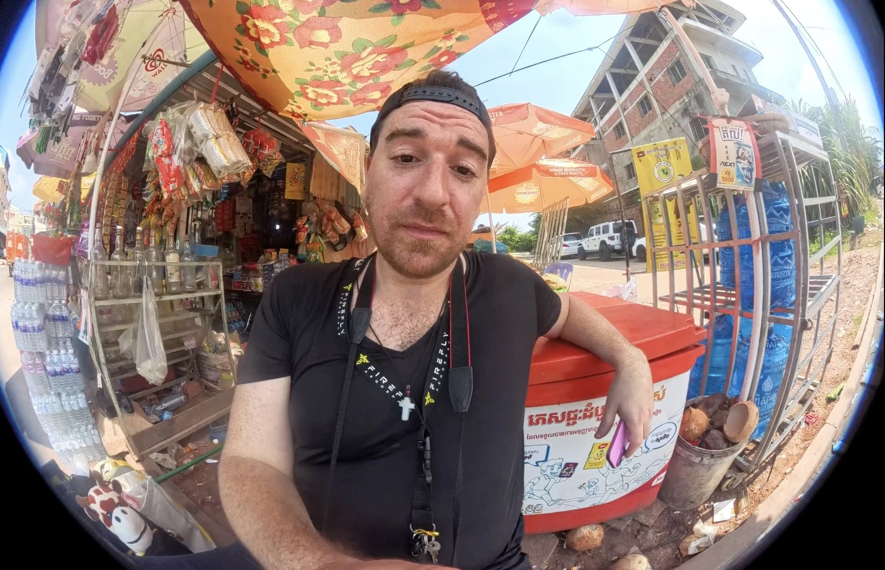
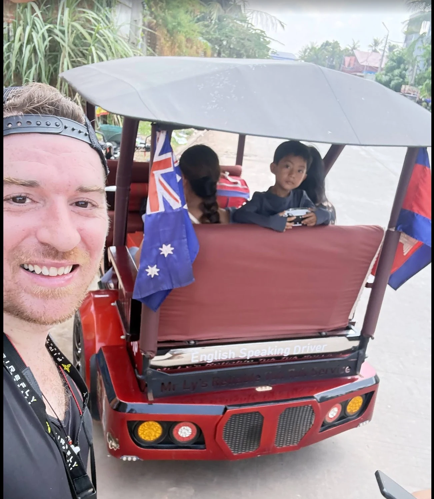
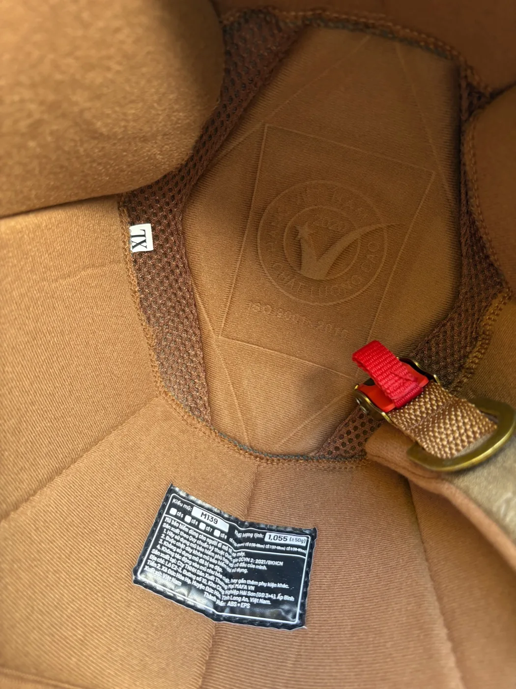
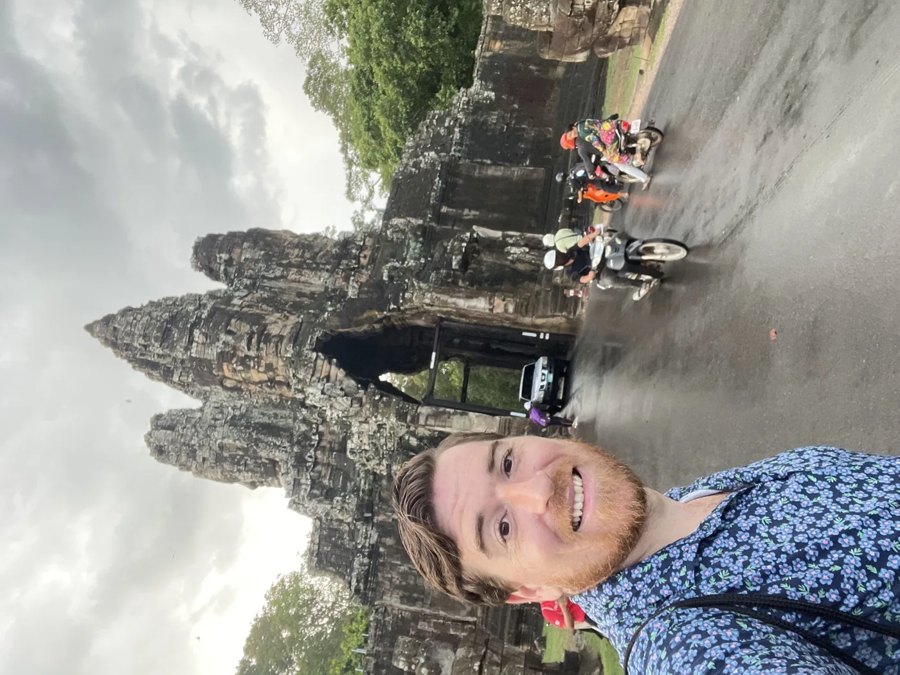
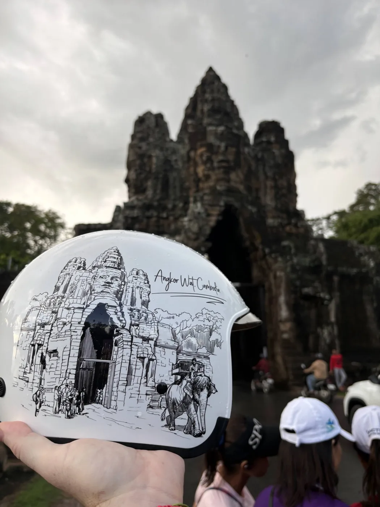
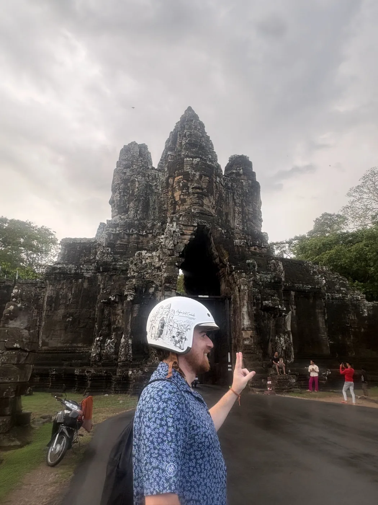
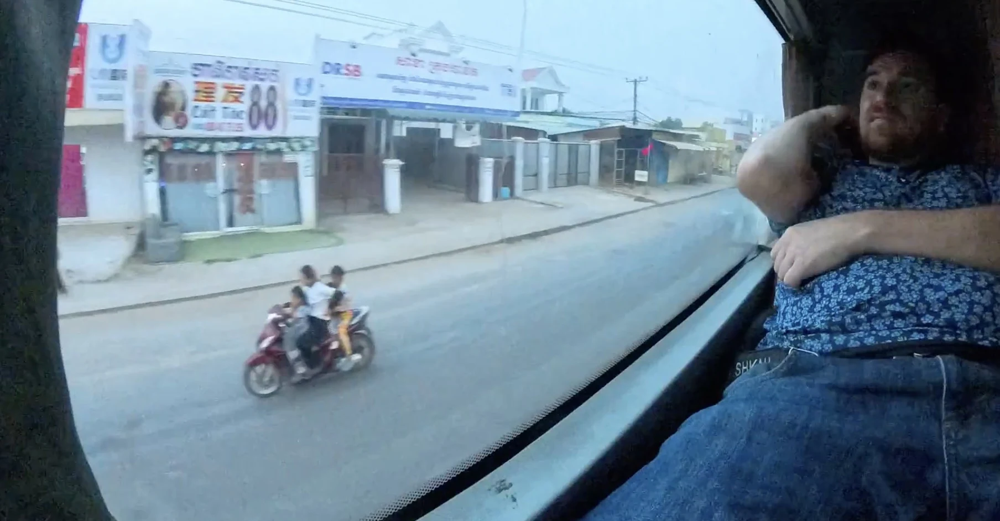
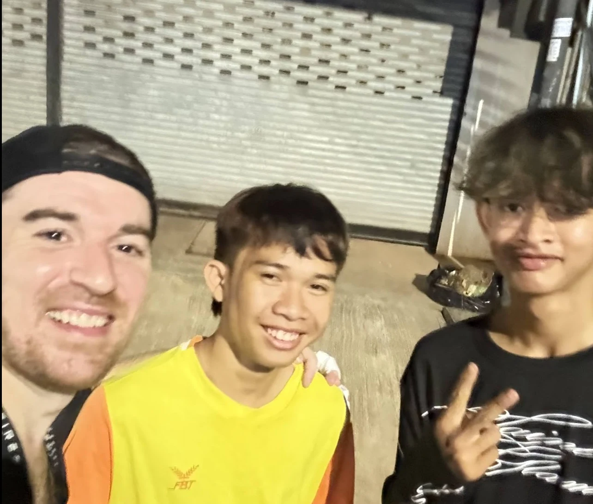
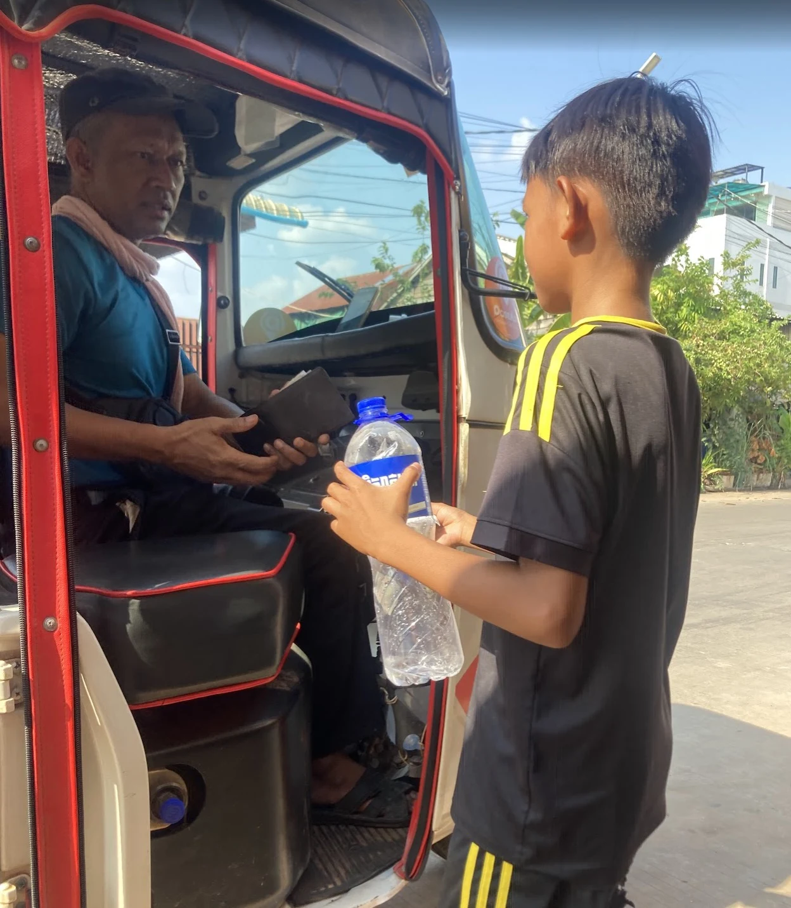
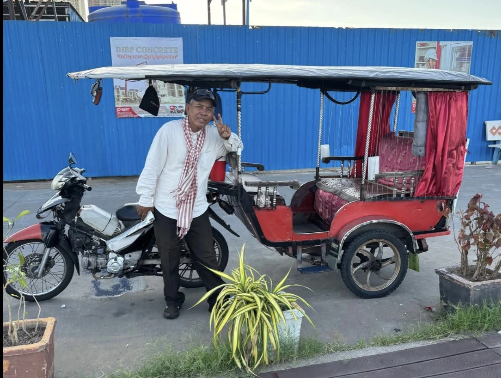
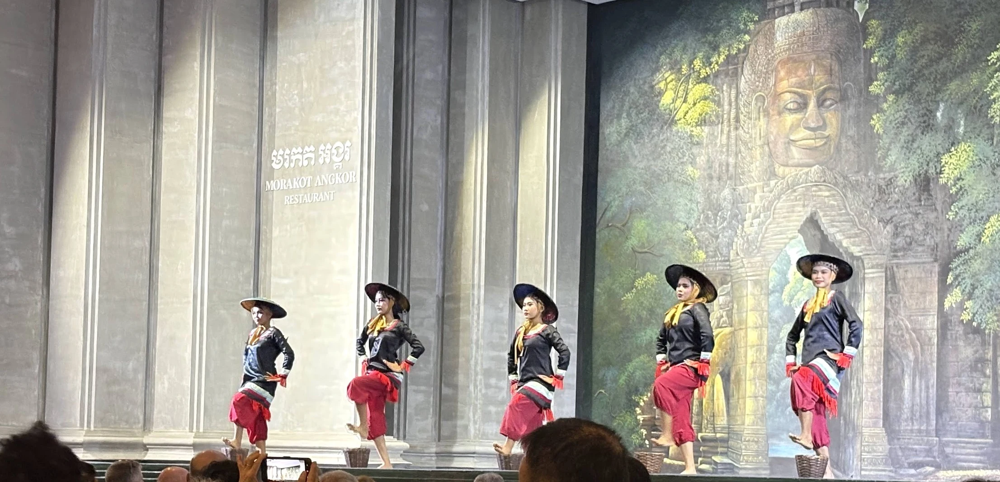
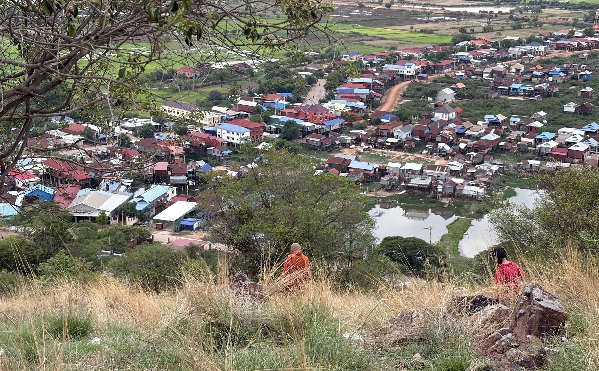
Get involved
The founding campaign is open now.
Jim is building the founding donor group that will make the first 1,000-helmet distribution possible. If you want to talk about the mission, a partnership, or how your organization might be involved, reach out directly.